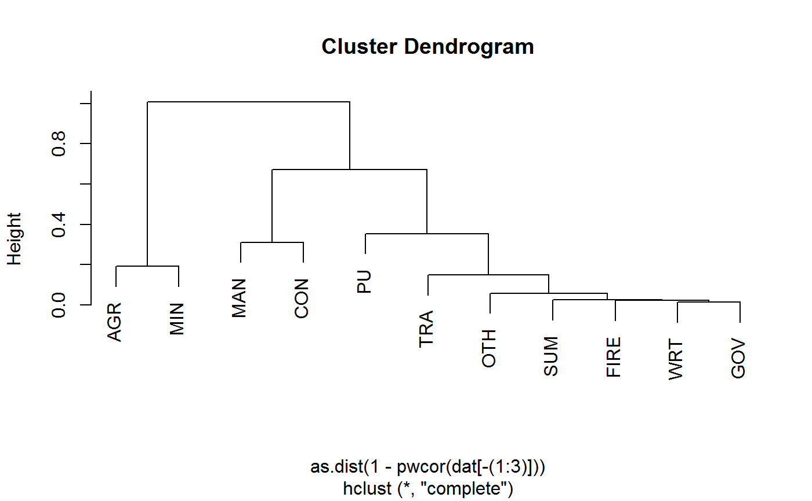

unlist2d.Rdunlist2d efficiently unlists lists of regular R objects (objects built up from atomic elements) and creates a data frame representation of the list through recursive flattening and intelligent row-binding operations. It is a full 2-dimensional generalization of unlist, but best understood as a recursive generalization of do.call(rbind, ...). This function is a powerful tool to create a tidy data frame representation from (nested) lists of vectors, data frames, matrices, arrays or heterogeneous objects.
unlist2d(l, idcols = ".id", row.names = FALSE, recursive = TRUE,
id.factor = FALSE, DT = FALSE)a unlistable list (with atomic elements in all final nodes, see is_unlistable).
a character stub or a vector of names for id-columns automatically added - one for each level of nesting in l. By default the stub is ".id", so columns will be of the form ".id.1", ".id.2", etc... . if idcols = TRUE, the stub is also set to ".id". If idcols = FALSE, id-columns are omitted. The content of the id columns are the list names, or (if missing) integers for the list elements. Missing elements in asymmetric nested structures are filled up with NA. See Examples.
TRUE extracts row names from all the objects in l (where available) and adds them to the output in a column named "row.names". Alternatively, a column name i.e. row.names = "file" can be supplied. For plain matrices in l, integer row names are generated.
logical. if FALSE, only process the lowest (deepest) level of l.
if TRUE and idcols != FALSE, create id columns as factors instead of character or integer vectors. Alternatively it is possible to specify id.factor = "ordered" to generate ordered factor id's. This is useful if id's are used for further analysis e.g. as inputs to ggplot2.
logical. TRUE returns a data.table, not a data.frame.
The data frame representation created by unlist2d is built as follows:
Recurse down to the lowest level of the list-tree, data frames are exempted and treated as a final elements.
Identify the objects, if they are vectors, matrices or arrays convert them to data frame (in the case of atomic vectors each element becomes a column).
Row-bind these data frames using data.table's rbindlist function. Columns are matched by name. If the number of columns differ, fill empty spaces with NA's. If idcols != FALSE, create id-columns on the left, filled with the object names or indices (if the (sub-)list is unnamed). If row.names != FALSE, store row names of the objects (if available) in a separate column.
Move up to the next higher level of the list-tree and repeat: Convert atomic objects to data frame and row-bind while matching all columns and filling unmatched ones with NA's. Create another id-column for each level of nesting passed through. If the list-tree is asymmetric, fill empty spaces in lower-level id columns with NA's.
The result of this iterative procedure is a single data frame containing on the left side id-columns for each level of nesting (from higher to lower level), followed by a column containing all the row.names of the objects (if row.names != FALSE), followed by the object columns, matched at each level of recursion. Optimal results are of course obtained with symmetric lists of arrays, matrices or data frames, which unlist2d efficiently binds into a beautiful data frame ready for plotting or further analysis. See examples below.
A data frame or (if DT = TRUE) a data.table.
For lists of data frames unlist2d works just like data.table::rbindlist(l, use.names = TRUE, fill = TRUE, idcol = ".id") (also the same speed), however for lists of lists unlist2d does not produce the same output as data.table::rbindlist.
## Basic Examples:
l <- list(mtcars, list(mtcars, mtcars))
tail(unlist2d(l))
#> .id.1 .id.2 mpg cyl disp hp drat wt qsec vs am gear carb X
#> 91 2 2 26.0 4 120.3 91 4.43 2.140 16.7 0 1 5 2 -0.5538141
#> 92 2 2 30.4 4 95.1 113 3.77 1.513 16.9 1 1 5 2 -0.4040629
#> 93 2 2 15.8 8 351.0 264 4.22 3.170 14.5 0 1 5 4 -0.2300432
#> 94 2 2 19.7 6 145.0 175 3.62 2.770 15.5 0 1 5 6 0.3223290
#> 95 2 2 15.0 8 301.0 335 3.54 3.570 14.6 0 1 5 8 -2.1486097
#> 96 2 2 21.4 4 121.0 109 4.11 2.780 18.6 1 1 4 2 1.3451669
unlist2d(rapply2d(l, fmean))
#> .id.1 .id.2 mpg cyl disp hp drat wt qsec
#> 1 1 NA 20.09062 6.1875 230.7219 146.6875 3.596562 3.21725 17.84875
#> 2 2 1 20.09062 6.1875 230.7219 146.6875 3.596562 3.21725 17.84875
#> 3 2 2 20.09062 6.1875 230.7219 146.6875 3.596562 3.21725 17.84875
#> vs am gear carb X
#> 1 0.4375 0.40625 3.6875 2.8125 -0.1307565
#> 2 0.4375 0.40625 3.6875 2.8125 -0.1307565
#> 3 0.4375 0.40625 3.6875 2.8125 -0.1307565
l = list(a = qM(mtcars[1:8]),
b = list(c = mtcars[4:11], d = list(e = mtcars[2:10], f = mtcars)))
tail(unlist2d(l, row.names = TRUE))
#> .id.1 .id.2 .id.3 row.names mpg cyl disp hp drat wt qsec vs am
#> 123 b d f Porsche 914-2 26.0 4 120.3 91 4.43 2.140 16.7 0 1
#> 124 b d f Lotus Europa 30.4 4 95.1 113 3.77 1.513 16.9 1 1
#> 125 b d f Ford Pantera L 15.8 8 351.0 264 4.22 3.170 14.5 0 1
#> 126 b d f Ferrari Dino 19.7 6 145.0 175 3.62 2.770 15.5 0 1
#> 127 b d f Maserati Bora 15.0 8 301.0 335 3.54 3.570 14.6 0 1
#> 128 b d f Volvo 142E 21.4 4 121.0 109 4.11 2.780 18.6 1 1
#> gear carb X
#> 123 5 2 -0.5538141
#> 124 5 2 -0.4040629
#> 125 5 4 -0.2300432
#> 126 5 6 0.3223290
#> 127 5 8 -2.1486097
#> 128 4 2 1.3451669
unlist2d(rapply2d(l, fmean))
#> .id.1 .id.2 .id.3 mpg cyl disp hp drat wt qsec
#> 1 a <NA> <NA> 20.09062 6.1875 230.7219 146.6875 3.596562 3.21725 17.84875
#> 2 b c <NA> NA NA NA 146.6875 3.596562 3.21725 17.84875
#> 3 b d e NA 6.1875 230.7219 146.6875 3.596562 3.21725 17.84875
#> 4 b d f 20.09062 6.1875 230.7219 146.6875 3.596562 3.21725 17.84875
#> vs am gear carb X
#> 1 0.4375 NA NA NA NA
#> 2 0.4375 0.40625 3.6875 2.8125 NA
#> 3 0.4375 0.40625 3.6875 NA NA
#> 4 0.4375 0.40625 3.6875 2.8125 -0.1307565
unlist2d(rapply2d(l, fmean), recursive = FALSE)
#> $a
#> mpg cyl disp hp drat wt qsec
#> 20.090625 6.187500 230.721875 146.687500 3.596562 3.217250 17.848750
#> vs
#> 0.437500
#>
#> $b
#> $b$c
#> hp drat wt qsec vs am gear
#> 146.687500 3.596562 3.217250 17.848750 0.437500 0.406250 3.687500
#> carb
#> 2.812500
#>
#> $b$d
#> .id cyl disp hp drat wt qsec vs am gear
#> 1 e 6.1875 230.7219 146.6875 3.596562 3.21725 17.84875 0.4375 0.40625 3.6875
#> 2 f 6.1875 230.7219 146.6875 3.596562 3.21725 17.84875 0.4375 0.40625 3.6875
#> mpg carb X
#> 1 NA NA NA
#> 2 20.09062 2.8125 -0.1307565
#>
#>
## Groningen Growth and Development Center 10-Sector Database
head(GGDC10S) # See ?GGDC10S
#> Country Regioncode Region Variable Year AGR MIN
#> 1 BWA SSA Sub-saharan Africa VA 1960 NA NA
#> 2 BWA SSA Sub-saharan Africa VA 1961 NA NA
#> 3 BWA SSA Sub-saharan Africa VA 1962 NA NA
#> 4 BWA SSA Sub-saharan Africa VA 1963 NA NA
#> 5 BWA SSA Sub-saharan Africa VA 1964 16.30154 3.494075
#> 6 BWA SSA Sub-saharan Africa VA 1965 15.72700 2.495768
#> MAN PU CON WRT TRA FIRE GOV OTH
#> 1 NA NA NA NA NA NA NA NA
#> 2 NA NA NA NA NA NA NA NA
#> 3 NA NA NA NA NA NA NA NA
#> 4 NA NA NA NA NA NA NA NA
#> 5 0.7365696 0.1043936 0.6600454 6.243732 1.658928 1.119194 4.822485 2.341328
#> 6 1.0181992 0.1350976 1.3462312 7.064825 1.939007 1.246789 5.695848 2.678338
#> SUM
#> 1 NA
#> 2 NA
#> 3 NA
#> 4 NA
#> 5 37.48229
#> 6 39.34710
namlab(GGDC10S, class = TRUE)
#> Variable Class Label
#> 1 Country character Country
#> 2 Regioncode character Region code
#> 3 Region character Region
#> 4 Variable character Variable
#> 5 Year numeric Year
#> 6 AGR numeric Agriculture
#> 7 MIN numeric Mining
#> 8 MAN numeric Manufacturing
#> 9 PU numeric Utilities
#> 10 CON numeric Construction
#> 11 WRT numeric Trade, restaurants and hotels
#> 12 TRA numeric Transport, storage and communication
#> 13 FIRE numeric Finance, insurance, real estate and business services
#> 14 GOV numeric Government services
#> 15 OTH numeric Community, social and personal services
#> 16 SUM numeric Summation of sector GDP
# Panel-Summarize this data by Variable (Emloyment and Value Added)
l <- qsu(GGDC10S, by = ~ Variable, # Output as list (instead of 4D array)
pid = ~ Variable + Country,
cols = 6:16, array = FALSE)
str(l, give.attr = FALSE) # A list of 2-levels with matrices of statistics
#> List of 11
#> $ AGR :List of 3
#> ..$ Overall: 'qsu' num [1:2, 1:5] 2225 2139 16746 5137561 55645 ...
#> ..$ Between: 'qsu' num [1:2, 1:5] 42 43 16746 5137561 54119 ...
#> ..$ Within : 'qsu' num [1:2, 1:5] 5.30e+01 4.97e+01 2.53e+06 2.53e+06 1.29e+04 ...
#> $ MIN :List of 3
#> ..$ Overall: 'qsu' num [1:2, 1:5] 2216 2139 360 3802687 1295 ...
#> ..$ Between: 'qsu' num [1:2, 1:5] 42 43 360 3802687 1155 ...
#> ..$ Within : 'qsu' num [1:2, 1:5] 5.28e+01 4.97e+01 1.87e+06 1.87e+06 5.86e+02 ...
#> $ MAN :List of 3
#> ..$ Overall: 'qsu' num [1:2, 1:5] 2216 2139 5204 11270966 13925 ...
#> ..$ Between: 'qsu' num [1:2, 1:5] 42 43 5204 11270966 11862 ...
#> ..$ Within : 'qsu' num [1:2, 1:5] 5.28e+01 4.97e+01 5.54e+06 5.54e+06 7.29e+03 ...
#> $ PU :List of 3
#> ..$ Overall: 'qsu' num [1:2, 1:5] 2215 2139 153 683127 365 ...
#> ..$ Between: 'qsu' num [1:2, 1:5] 42 43 153 683127 294 ...
#> ..$ Within : 'qsu' num [1:2, 1:5] 52.7 49.7 335679.5 335679.5 216.3 ...
#> $ CON :List of 3
#> ..$ Overall: 'qsu' num [1:2, 1:5] 2216 2139 1794 3666191 5114 ...
#> ..$ Between: 'qsu' num [1:2, 1:5] 42 43 1794 3666191 3712 ...
#> ..$ Within : 'qsu' num [1:2, 1:5] 5.28e+01 4.97e+01 1.80e+06 1.80e+06 3.52e+03 ...
#> $ WRT :List of 3
#> ..$ Overall: 'qsu' num [1:2, 1:5] 2216 2139 4368 6903432 8617 ...
#> ..$ Between: 'qsu' num [1:2, 1:5] 42 43 4368 6903432 6929 ...
#> ..$ Within : 'qsu' num [1:2, 1:5] 5.28e+01 4.97e+01 3.39e+06 3.39e+06 5.12e+03 ...
#> $ TRA :List of 3
#> ..$ Overall: 'qsu' num [1:2, 1:5] 2216 2139 1442 2998080 3289 ...
#> ..$ Between: 'qsu' num [1:2, 1:5] 42 43 1442 2998080 2738 ...
#> ..$ Within : 'qsu' num [1:2, 1:5] 5.28e+01 4.97e+01 1.47e+06 1.47e+06 1.82e+03 ...
#> $ FIRE:List of 3
#> ..$ Overall: 'qsu' num [1:2, 1:5] 2216 2139 1331 3372504 3114 ...
#> ..$ Between: 'qsu' num [1:2, 1:5] 42 43 1331 3372504 2598 ...
#> ..$ Within : 'qsu' num [1:2, 1:5] 5.28e+01 4.97e+01 1.66e+06 1.66e+06 1.72e+03 ...
#> $ GOV :List of 3
#> ..$ Overall: 'qsu' num [1:2, 1:5] 1780 1702 4197 3498683 7278 ...
#> ..$ Between: 'qsu' num [1:2, 1:5] 34 35 4197 3498683 6577 ...
#> ..$ Within : 'qsu' num [1:2, 1:5] 5.24e+01 4.86e+01 1.71e+06 1.71e+06 3.12e+03 ...
#> $ OTH :List of 3
#> ..$ Overall: 'qsu' num [1:2, 1:5] 2109 2139 2268 3343192 8022 ...
#> ..$ Between: 'qsu' num [1:2, 1:5] 40 43 2268 3343192 5268 ...
#> ..$ Within : 'qsu' num [1:2, 1:5] 5.27e+01 4.97e+01 1.68e+06 1.68e+06 6.05e+03 ...
#> $ SUM :List of 3
#> ..$ Overall: 'qsu' num [1:2, 1:5] 2225 2139 36847 43961639 96319 ...
#> ..$ Between: 'qsu' num [1:2, 1:5] 42 43 36847 43961639 89206 ...
#> ..$ Within : 'qsu' num [1:2, 1:5] 5.30e+01 4.97e+01 2.16e+07 2.16e+07 3.63e+04 ...
head(unlist2d(l)) # Default output, missing the variables (row-names)
#> .id.1 .id.2 N Mean SD Min Max
#> 1 AGR Overall 2225.00000 16746.43 55644.84 5.240734e+00 390980.0
#> 2 AGR Overall 2139.00000 5137560.88 52913681.79 5.887857e-07 1191877784.8
#> 3 AGR Between 42.00000 16746.43 54118.72 1.357596e+01 287744.2
#> 4 AGR Between 43.00000 5137560.88 27760188.51 1.674095e+02 189627688.7
#> 5 AGR Within 52.97619 2526696.50 12942.66 2.394221e+06 2629932.3
#> 6 AGR Within 49.74419 2526696.50 45046971.64 -1.869215e+08 1004776792.6
head(unlist2d(l, row.names = TRUE)) # Here we go, but this is still not very nice
#> .id.1 .id.2 row.names N Mean SD Min
#> 1 AGR Overall EMP 2225.00000 16746.43 55644.84 5.240734e+00
#> 2 AGR Overall VA 2139.00000 5137560.88 52913681.79 5.887857e-07
#> 3 AGR Between EMP 42.00000 16746.43 54118.72 1.357596e+01
#> 4 AGR Between VA 43.00000 5137560.88 27760188.51 1.674095e+02
#> 5 AGR Within EMP 52.97619 2526696.50 12942.66 2.394221e+06
#> 6 AGR Within VA 49.74419 2526696.50 45046971.64 -1.869215e+08
#> Max
#> 1 390980.0
#> 2 1191877784.8
#> 3 287744.2
#> 4 189627688.7
#> 5 2629932.3
#> 6 1004776792.6
head(unlist2d(l, idcols = c("Sector","Trans"), # Now this is looking pretty good
row.names = "Variable"))
#> Sector Trans Variable N Mean SD Min
#> 1 AGR Overall EMP 2225.00000 16746.43 55644.84 5.240734e+00
#> 2 AGR Overall VA 2139.00000 5137560.88 52913681.79 5.887857e-07
#> 3 AGR Between EMP 42.00000 16746.43 54118.72 1.357596e+01
#> 4 AGR Between VA 43.00000 5137560.88 27760188.51 1.674095e+02
#> 5 AGR Within EMP 52.97619 2526696.50 12942.66 2.394221e+06
#> 6 AGR Within VA 49.74419 2526696.50 45046971.64 -1.869215e+08
#> Max
#> 1 390980.0
#> 2 1191877784.8
#> 3 287744.2
#> 4 189627688.7
#> 5 2629932.3
#> 6 1004776792.6
dat <- unlist2d(l, c("Sector","Trans"), # Id-columns can also be generated as factors
"Variable", id.factor = TRUE)
str(dat)
#> 'data.frame': 66 obs. of 8 variables:
#> $ Sector : Factor w/ 11 levels "AGR","MIN","MAN",..: 1 1 1 1 1 1 2 2 2 2 ...
#> $ Trans : Factor w/ 3 levels "Overall","Between",..: 1 1 2 2 3 3 1 1 2 2 ...
#> $ Variable: chr "EMP" "VA" "EMP" "VA" ...
#> $ N : num 2225 2139 42 43 53 ...
#> $ Mean : num 16746 5137561 16746 5137561 2526697 ...
#> $ SD : num 55645 52913682 54119 27760189 12943 ...
#> $ Min : num 5.24 5.89e-07 1.36e+01 1.67e+02 2.39e+06 ...
#> $ Max : num 3.91e+05 1.19e+09 2.88e+05 1.90e+08 2.63e+06 ...
# Split this sectoral data, first by Variable (Emloyment and Value Added), then by Country
sdat <- rapply2d(split(GGDC10S[c(1,6:16)], GGDC10S$Variable), function(x) split(x[-1],x[[1]]))
# Compute pairwise correlations between sectors and recombine:
dat <- unlist2d(rapply2d(sdat, pwcor),
idcols = c("Variable","Country"),
row.names = "Sector")
head(dat)
#> Variable Country Sector AGR MIN MAN PU
#> 1 EMP ARG AGR 1.00000000 -0.5432238 -0.06195285 -0.6039527
#> 2 EMP ARG MIN -0.54322382 1.0000000 0.27420132 0.5591395
#> 3 EMP ARG MAN -0.06195285 0.2742013 1.00000000 0.4387383
#> 4 EMP ARG PU -0.60395268 0.5591395 0.43873834 1.0000000
#> 5 EMP ARG CON -0.85244262 0.7670132 0.32534168 0.6119454
#> 6 EMP ARG WRT -0.88582197 0.7587235 0.05909901 0.5778457
#> CON WRT TRA FIRE GOV OTH
#> 1 -0.8524426 -0.88582197 -0.65710602 -0.77508301 -0.85797631 -0.86895334
#> 2 0.7670132 0.75872350 0.77160809 0.81346988 0.75874992 0.73533837
#> 3 0.3253417 0.05909901 -0.07476592 -0.08183532 -0.05793235 -0.03827729
#> 4 0.6119454 0.57784570 0.57586671 0.50156150 0.49865348 0.52565945
#> 5 1.0000000 0.87105470 0.65409838 0.79003514 0.81912978 0.82502726
#> 6 0.8710547 1.00000000 0.86259400 0.95274994 0.98270766 0.98862375
#> SUM
#> 1 -0.84715229
#> 2 0.81170356
#> 3 0.05960032
#> 4 0.56998662
#> 5 0.86608973
#> 6 0.99180468
plot(hclust(as.dist(1-pwcor(dat[-(1:3)])))) # Using corrs. as distance metric to cluster sectors

# Together with other functions like psmat, unlist2d can also effectively help reshape data:
head(unlist2d(psmat(subset(GGDC10S, Variable == "VA"), ~Country, ~Year, cols = 6:16, array = FALSE),
idcols = "Sector", row.names = "Country"), 2)
#> Sector Country 1947 1948 1949 1950 1951 1952
#> 1 AGR ARG NA NA NA 5.887857e-07 9.165327e-07 9.964412e-07
#> 1953 1954 1955 1956 1957 1958
#> 1 1.482589e-06 1.396692e-06 1.574796e-06 2.001253e-06 2.644127e-06 3.741081e-06
#> 1959 1960 1961 1962 1963 1964
#> 1 8.395798e-06 1.028314e-05 9.868339e-06 1.342763e-05 1.902081e-05 2.947121e-05
#> 1965 1966 1967 1968 1969 1970
#> 1 3.549257e-05 3.856346e-05 4.832476e-05 5.232561e-05 6.292321e-05 7.61702e-05
#> 1971 1972 1973 1974 1975 1976
#> 1 0.0001145865 0.0002086401 0.0004172802 0.0004868269 0.001043201 0.005841923
#> 1977 1978 1979 1980 1981 1982 1983
#> 1 0.01613484 0.03672066 0.1052937 0.1730322 0.4325805 1.816838 8.219029
#> 1984 1985 1986 1987 1988 1989 1990 1991
#> 1 57.10062 350.3902 673.7874 1633.943 8626.52 269.8437 4843.777 10511.53
#> 1992 1993 1994 1995 1996 1997 1998 1999
#> 1 11757.53 12148.85 13084.82 13808.48 15269.96 15293.02 15702.92 12638.96
#> 2000 2001 2002 2003 2004 2005 2006 2007
#> 1 13300.48 12275.65 31903.94 38824.56 43148.47 46330.59 50759.94 70101.51
#> 2008 2009 2010 2011 2012 2013
#> 1 93178.7 79362.85 132365.8 178745.3 NA NA
#> [ reached 'max' / getOption("max.print") -- omitted 1 rows ]